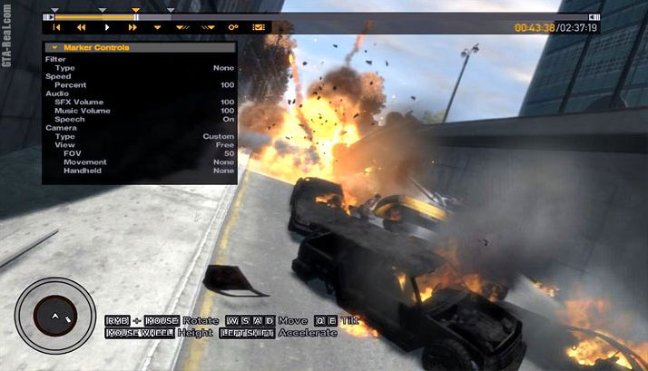

• ОС: Windows Vista с Service Pack 1 // Windows XP с Service Pack 3;
• Процессор: IntelCore 2 Duo с тактовой частотой 1,8 ГГц либо AMD Athlon X2 64 с тактовой частотой 2.4 ГГц;
• Видеокарта NVIDIA 7900 либо ATI X1900с с 256 Мб видеопамяти;
• 1.5 Гб оперативной памяти;
• 16 Гб свободного места на жестком диске.
• ОС: Windows Vista с Service Pack 1 // Windows XP с Service Pack 3;
• Процессор: IntelCore 2 Quad с тактовой частотой 2,4 ГГц либо AMD Phenom X3 с тактовой частотой 2,1 ГГц;
• Видеокарта: NVIDIA 8600 либо ATI 3870 с 512 Мб видеопамяти;
• 2,5 Гб оперативной памяти для WindowsVista или 2 Гб для Windows XP;
• 18 Гб свободного места на жестком диске.
В русской версии Grand Theft Auto IV исправлены многие технические недочеты, присутствующие в международной версии игры, вышедшей в начале декабря в Америке и странах Европы.
Русская РС-версия Grand Theft Auto IV выходит с переведенными внутриигровыми текстами и оригинальным озвучиванием персонажей с субтитрами на русском языке, что позволяет в полной мере передать суть происходящего в игре и при этом сохранить неповторимый колорит криминального мегаполиса.
В PC-версии Grand Theft Auto IV представлен встроенный механизм для записи игровых роликов, а также обновленный многопользовательский режим.
Вот что говорят 1С-СофтКлаб о GTA IV
Grand Theft Auto IV — один из самых успешных проектов в истории интерактивных развлечений, дважды отмеченный в Книге рекордов Гиннеса. В день релиза консольная версия игры разошлась общим тиражом 3,6 миллиона копий; в первую неделю количество проданных экземпляров превысило 6 миллионов.
Редактор видео – главная отличительная особенность версии GTA 4 для PC от своих консольных собратьев.
В любой момент, нажав на F2, вы сохраните на своем жестком диске 30 секунд предыдущего геймплея. То есть все, что происходило на экране.
Сохранять можно бесчисленное количество роликов, на это нет никаких ограничений.
Вход в редактор осуществляется через пункт меню мобильного телефона. Все несохраненные данные после этого теряются, так что не делайте этого во время напряженной длинной миссии.
После этого вы оказываетесь в окне редактирования роликов. Все изменения происходят непосредственно на игровом движке GTA 4. То есть вы можете управлять камерой и ракурсами, как только вам угодно. При этом свободная камера не может отдаляться от Нико на расстояние больше десяти метров. 
Маркеры следования помогут вам построить путь следования камеры, чтобы получить эффектную картинку.
В повторе нельзя ничего изменить в плане действия – ни траекторию движения главных действующих лиц, ни погоду, ни то, что вообще происходит на экране. Это может показаться странным, так как во всем остальном клип готовится именно на движке игры, но тем не менее – те вещи, которые запечатлены в момент нажатия на F2 (вернее, предшествующие этому), изменению не подлежат.
Эффекты: замедление времени, сепия, шум, неон, негатив и другое.
Дополнительные возможности: переходы между кадрами, наложение текста, музыки.
Конечный итог: видео-файл в формате WMV. Разрешение 640x480, 720p и 1080p.
Сам Нико Беллик разговаривает по-английски с сильным восточноевропейским акцентом. Его несколько раз принимают за русского, однако он прямо говорит, что он не русский, и в России ни разу в жизни не был. Известно, что относительно недавно родина Нико была ареной жестокой войны, так что, скорее всего, речь идёт о Югославии. С большой вероятностью он является сербом.
В молодости Нико пришлось воевать. Война научила его, с одной стороны, эффективным навыкам убийства и, с другой, сделала прожжённым циником, которого интересуют в первую очередь деньги. В своём прошлом Нико скрывает мрачную тайну, которая раскроется со временем.
В Либерти-Сити новоиспечённый иммигрант прибывает по приглашению своего кузена, Романа Беллика. В своих письмах Роман ярко живописал исполнения всех своих желаний в «Свободном Городе» в «стране возможностей»: шикарные апартаменты, полный гараж спорт-каров, и целый гарем топ-моделей. В реальности же он живёт в грязном гадюшнике в «русском» районе Хоув-Бич (аналог Брайтон-Бич в реальном мире), владеет небольшой службой такси, и ухаживает за местной девушкой Мэллори.
Нико знакомится с окружением Романа, и в самом скором времени обзаводится новыми друзьями. Помогая своему кузену с бизнесом, Нико однажды подвозит одного из постоянных клиентов Романа Беллика, колоритного растамана по кличке Малыш Джейкоб. Малыш Джейкоб непрерывно курит ганжубас и говорит по-английски на тяжёлом растаманском жаргоне с сильным ямайским акцентом, однако Нико умудряется прекрасно его понимать. Вскоре Нико и Малыш Джейкоб становятся друзьями. Другим постоянным клиентом Романа является буквально фонтанирующий оптимизмом бодибилдер Брюси Киббуц, который зарабатывает себе на жизнь всем, что связано с машинами (не только тюнингом и стритрейсерством, но и угонами).
Мэллори знакомит Нико с девушкой по имени Мишель. Новая знакомая быстро входит в доверие к Беллику, и они начинают встречаться. Мишель ведёт себя подозрительно: на свиданиях она то и дело пытается выяснить, чем на самом деле занимается Нико и, кроме того, вся мебель в её квартире почему-то совсем новая, зачастую с неубранными ценниками.
Пагубная страсть Романа к азартным играм приводит его к долгам опасным людям. Однажды Нико заступается за своего двоюродного брата, набив морды «наехавшим» на него албанским бандитам. Бойцовские качества Нико обращают на себя внимания мелкой «шестёрки» русской мафии Влада Глебова. Глебов предлагает Нико поработать на него, сначала в качестве отработки долга Романа, а затем и за деньги.
Однако отношения Нико и Влада не складываются. Во время всех встреч в баре «Товарищи» в Хоув-Бич Влад ведёт себя грубо и оскорбительно, в ответ на что Нико остроумно над ним издевается. Узнав о том, что Влад за спиной Романа уже практически отбил у него Мэллори, Нико окончательно выходит из себя. Не побоявшись русской мафии, Нико преследует Глебова и убивает в доках, сбрасывая труп в реку. После этого убийства Нико рассказывает Роману, что на самом деле привело его в «Свободный Город» — жажда мести: во время войны на родине его отряд был почти поголовно перебит в засаде, а предатель теперь скрывается где-то в Либерти-Сити.
Романом сразу же овладевает паранойя, и не зря: кузенов быстро находит русская мафия в лице Михаила Фаустина и Дмитрия Раскалова. Михаил и Дмитрий когда-то вместе служили в Российской Армии, и потом вместе сидели в тюрьме. Спокойный и рассудительный Раскалов и взрывоопасный агрессивный Фаустин вместе образуют мощный тандем, который эффективно «решает все вопросы».
Оба Беллика приходят в себя в подвале, привязанные к стульям. Однако, поскольку убитый Влад постоянно выводил из себя не только Нико, но и своих боссов, Нико удается договорится с похитителями и он даже начинает на них работать. Роман получает пулю в живот, однако остаётся в живых.
Выполняя одно из заданий русских бандитов, Нико по приказу Михаила убивает Ленни, сына одного из боссов местной мафии Кенни Петровича. Дмитрий Раскалов безуспешно пытается отговорить Михаила от этого, однако убийство всё-таки состоялось.
Кенни Петрович жаждет крови. Дмитрий после долгих колебаний решается покончить со своим старым товарищем, и приказывает Нико «убрать» Михаила. Однако после того, как приказ выполнен, Дмитрий подставляет и Нико.
Выясняется, что Раскалов работает на Родислава Булгарина, человека, который был работодателем героя на родине и обвинил его в краже денег. После войны Нико долго не мог устроиться, и начал заниматься контрабандой и перевозками нелегальных иммигрантов; однажды корабль, на котором он находился, утонул. Нико чудом удалось выжить, однако Булгарин «повесил» на него долг.
Джейкоб, узнавший о встрече, помогает Беллику выбраться живым, хотя Раскалову и Булгарину удаётся бежать, после чего они поджигают квартиру Романа и его таксопарк. Роман впадает в состояние, близкое к истерике. Нико, как может, утешает своего кузена: в конце концов, у него осталась Меллори. Жизнь вскоре восстанавливается: Меллори находит Белликам квартиру в Южном Бохане и, кроме того, страховая компания выплачивает Роману щедрую компенсацию, так что он восстанавливает свой бизнес.
Герои переезжают в Бохан, где Меллори знакомит Нико с Мэнни Эскуэлой, бывшим наркодилером, в настоящее время желающим очистить улицы от наркотиков. Мэнни «работает на телекамеру», повсюду расхаживая со своим собственным оператором. Покинув Хоув Бич, Нико налаживает контакты, сменив русских бандитов на афроамериканских. Пафосные диалоги Мэнни о «духе улиц», и его попытки заснять Нико на камеру выводят его из себя, однако Мэнни платит деньги, так что Нико всё устраивает.
Через Мэллори Беллик выходит на Элизабету Торрес и ирландского бандита Патрика МакРири. Проведав Мэнни, протагонист знакомится с братом Патрика — Фрэнсисом, единственным полицейским в криминальной семье МакРири.
Также Нико встречает двух «чёрных братьев», Плейбоя X, влиятельного наркобарона, и его старого друга Дуэйна Форджа, который недавно вышел из тюрьмы, где тот провёл 16 лет, теперь живёт прошлым и в отдаленности напоминает Нико. Дуэйн постоянно пребывает в тяжёлой депрессии: после выхода из тюрьмы от него сбежала девушка со всеми деньгами, старые друзья отвернулись, а Плейбой X «отжимает» его бизнес. В конечном счете Плейбой X и Дуэйн «заказывают» Нико друг друга. Выбор зависит от игрока.
В конце концов пафосный Мэнни выводит из себя Элизабет, которая после принятия очередной дозы кокаина убивает его вместе с оператором. Нико приходится везти трупы к мрачному доктору, промышляющему нелегальной торговлей человеческими органами.
Тем временем, Нико помогает Патрику на нескольких сделках по покупке наркотиков, чем заслуживает близкую дружбу. Пытаясь разрешить ссору между Джейкобом и Элизабетой, Беллик доставляет партию наркотиков и сталкивается с Мишель. Её «странные вопросы» легко объясняются: на самом деле Мишель работает на правительство. Отношения разрушены, однако Мишель не только не сажает Нико в тюрьму, но даже находит ему нового работодателя, безымянного агента неизвестной спецслужбы. В качестве прикрытия он использовал газетное издательство (U.L. Paper).
Благодаря устраиваемым им бурным «разборкам» Нико Беллик регулярно становится героем (к счастью для себя — анонимным) новостей по местному радио: разборка с байкерами из банды «LOST», кровавое побоище в клубе «Перестройка». О делах Нико становится известным Департаменту Полиции Либерти-Сити, однако дело ограничивается выполнением кой-какой грязной работы для «продажного копа» Фрэнсиса МакРири.
Нико знакомится со всей семейкой МакРири. Патрик знакомит его со своей сестрой Кейт. Кейт ведёт тихий образ жизни и, в отличие от Мишель, оказывается на удивление недоступной. Нико не настаивает, поскольку ему не хочется получить пулю от её брата. В любом случае, ему легко можно получить своё благодаря знакомствам в интернете, правда, все поголовно девушки «из интернета» находятся в разном градусе неадекватности, и временами выводят Нико из себя. Кроме того, он может также пользоваться и уличными проститутками.
Нико работает на братьев Патрика, Джерри и Деррика. Вместе с Макрири Нико грабит банк. Но потом Фрэнсис звонит Нико и просит убить собственного брата — Деррика. Он якобы последняя зацепка к посту комиссара полиции. Тем временем звонит Деррик и просит убить Фрэнсиса. Кто из двух братьев останется жить — зависит от выбора игрока.
Тем временем вновь напоминает о себе Дмитрий Раскалов. Он похищает Романа, и держит его на заброшенном складе. Разъярённый Нико в одиночку врывается на склад и освобождает своего кузена.
Затем Нико участвует в глобальной афере с бриллиантами, одновременно и с разных сторон проходящей как в GTA IV, так и в двух дополнениях, Ballad of Gay Tony и Lost and Damned. По приказу итальянского мафиози Рэя Бочино Нико вместе с бригадой «мусорщиков» перевозит бриллианты в мусоровозе. Однако эта бригада решает сама похитить «лёд», и сбежать в Лас-Вентурас. По приказу Рэя Нико убивает их, доставив бриллианты Рэю. Глава «мусорщиков» Лука пытается спрятаться в туалете, однако Нико находит его и там.
Вместе с байкером Джонни Клебитцем Нико пытается продать бриллианты еврейской мафии, однако партнёры оказываются в засаде. В конечном итоге сделка сорвалась, бриллианты сумел забрать Луис Лопес, подопечный Тони Принса, деньги — байкер Джонни, а Нико остаётся и без денег и без бриллиантов. Разъярённый Рэй приказывает Нико убить сначала Джонни, но его на месте герой не обнаруживает и убивает двух других байкеров (одним из которых был Джим Фицджеральд - друг Джонни) а потом и торговца мафии Исаака.
Через Рэя герой работает на Фила Белла и на Дона Джеймса Пегорино. После того, как Нико несколько раз спас обоим жизнь, перед ним стоит трудный выбор. Пегорино и Филл Белл хотят пойти на сделку с Раскаловым. Но только услышав фамилию «Раскалов», Нико отказывается, но обещает подумать.
С помощью правительства и Дона Гравелли Нико находит Дарко Бравича, подставившего его на войне, он может оставить ему жизнь, а может убить. Также Джимми, поняв что он окружил себя «крысами» просит Нико убрать одного их подручных: Фила или Рэя.
Финал
Сюжет в игре впервые в серии предлагает две различные концовки, которые зависят от последнего выбора Нико. Герой должен решить, стоит ли ему совершить месть над Дмитрием Раскаловым, в чём Нико поддерживает Кейт МакРири, или следует заключить с Раскаловым сделку, на что его уговаривает Роман.
Месть
Если герой отправится мстить, то он встретится c Дмитрием на корабле «Platypus» (место, где начиналась игра). После продолжительной перестрелки Беллик убьёт Дмитрия и отправится на свадьбу Романа и Меллори. Кейт рада, что Нико совершил свой последний плохой поступок и теперь может начать жизнь заново и сопровождает его на свадьбе. После церемонии к церкви приезжает Джимми Пегорино и стреляет в гостей, пытаясь убить Нико, но смертельно ранит Кейт. Вместе с Джейкобом и Романом герой преследует подручных Пегорино до старого казино, где скрывается Джимми, после чего погоня за ним продолжается вдоль берега и, наконец, на вертолёте. Нико настигает Пегорино на Острове Счастья, где и убивает его. Вместе с кузеном Беллик решает, что им пора по-настоящему начать новую жизнь.
В случае, если герой соглашается на сделку с Дмитрием, Нико с Филом Беллом едут на встречу. Хотя Раскалов не сдерживает свою часть уговора, герои в конце концов добывают деньги за наркотики. Кейт недовольна тем, что Нико её не послушал, и не идёт на свадьбу Романа. После торжественной церемонии, киллер, который должен был убить Нико, попадает в Романа. Отчаявшись, Беллик вместе с Джейкобом атакуют Дмитрия в старом казино, где прячутся и Раскалов, и оказавшийся его сторонником Пегорино. Дмитрий убивает Пегорино и улетает от Нико на Остров Счастья. Герой гонится за Раскаловым и убивает его. В конце Нико решает, что лучше начать новую жизнь.
Казнить или помиловать?…
На протяжении всей игры перед игроком часто будет стоять выбор: убить или оставить в живых. В зависимости от того, какой выбор сделает игрок будет меняться сюжет, особенно если это важные для сюжета персонажи. Кардинально сюжет не поменяется от выбора, а всего лишь на пару миссий.
Дополнительные задания
Некоторых персонажей, которым игрок сохранил жизнь, можно позже встретить на улице и взять у них дополнительные задания. Дополнительные задания даются «случайными» прохожими, то есть герой получает их, просто встретив прохожего на улице. Выполнить эти задания обычно не составляет никакого труда — просто подвезти персонажа или преподать урок бандитам.